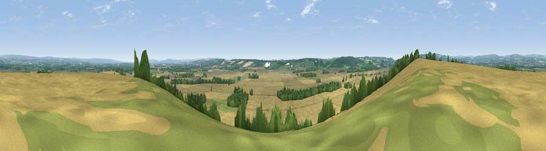

Viewpoint near Nunnington
#13598 in England · top 29% of its area beats it · near Nunnington · footpathWhere it is
The exact computed spot (SE 67625 78175). Click the marker for map links.
Public access: a public right of way passes within 17 m of this spot. Computed from Natural England's CRoW access layer and OpenStreetMap rights of way — not the legal definitive map. Always verify locally.
The view, rendered

A 360° render of this exact spot computed from the terrain model, tree cover and land cover — summer colours, afternoon light, calibrated against photographs of famous viewpoints. Real trees, hedges and buildings will differ in detail.
The panorama
Grey silhouette: terrain skyline in each direction (720 bearings, Earth curvature and refraction included). Dashed green: skyline with trees (+15 m) and buildings (+8 m) as obstacles. Blue strip: how far the ground is visible on each bearing.
Where the view opens
Wedge length = distance to the farthest visible ground on that bearing (vegetation-aware). Rings at 10, 25 and 50 km.
What fills the view
72% cropland · 16% grassland · 11% woodland ·
Angular shares of the visible panorama (visual magnitude), not map area. Landscape diversity 0.35 (0–1 Shannon).
Key numbers
More beautiful places nearby
The staircase of upgrades: each row has a higher view potential than everything closer. Driving times are estimates from straight-line distance, calibrated against real road routing — check an actual route before setting out.
| Place | Direction | Drive | Score |
|---|---|---|---|
| Caulkleys Bank | W · 0 km | ~1 min | 59.3 |
| Viewpoint near Slingsby | SSE · 5 km | ~11 min | 60.6 |
| Viewpoint near Slingsby | SSE · 5 km | ~12 min | 62.4 |
| Viewpoint near Coneysthorpe | SE · 7 km | ~14 min | 65.8 |
| Viewpoint near Oswaldkirk | W · 7 km | ~14 min | 65.9 |
| Viewpoint near Terrington | SSW · 8 km | ~15 min | 70.4 |
| Viewpoint near Ampleforth | W · 8 km | ~16 min | 76.6 |
| Viewpoint near Kilburn | WNW · 17 km | ~29 min | 79.3 |
54.19489, -0.96500 · source: screening · position refined by local search. Computed location — check access rights before visiting.